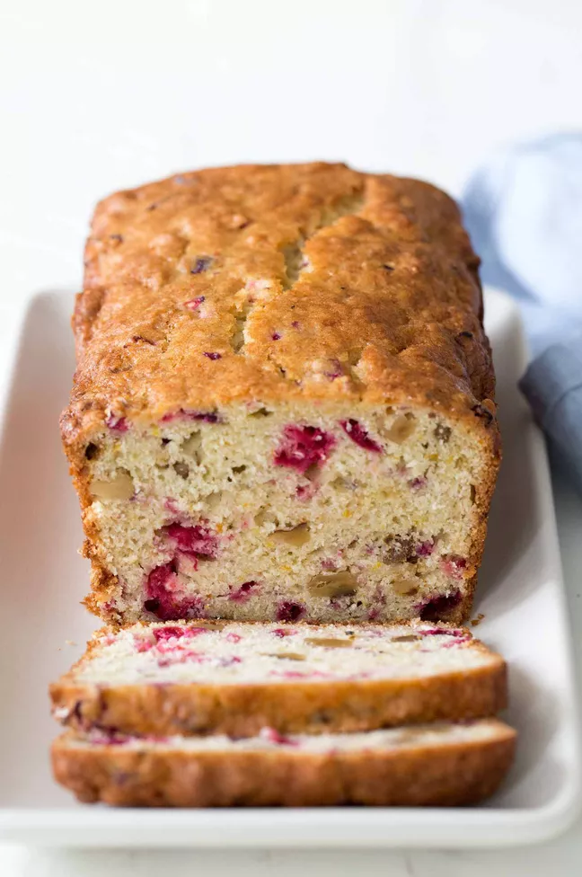

Cranberry Orange Nut Bread

Description
Delicious cranberry orange bread! With chopped cranberries, walnuts, and orange zest. Perfect for the holidays.
Ingredients
- 2 cups flour
- 1 1/2 teaspoons baking powder
- 1/2 teaspoon baking soda
- 1 baguette, cut into 12 1/4-inch slices
- 1/2 teaspoon salt
- 1 cup chopped fresh cranberries
- 3/4 cup coarsely chopped walnuts
- 3/4 cup orange juice
- 3/4 cup granulated sugar
- 1/4 cup butter, melted
- 1 egg, beaten
- 1 tablespoon orange zest
Steps
- Pre-heat oven to 350°F
- Combine dry ingredients
- Combine wet ingredients
- Add wet ingredients into dry
- Bake
- Cool